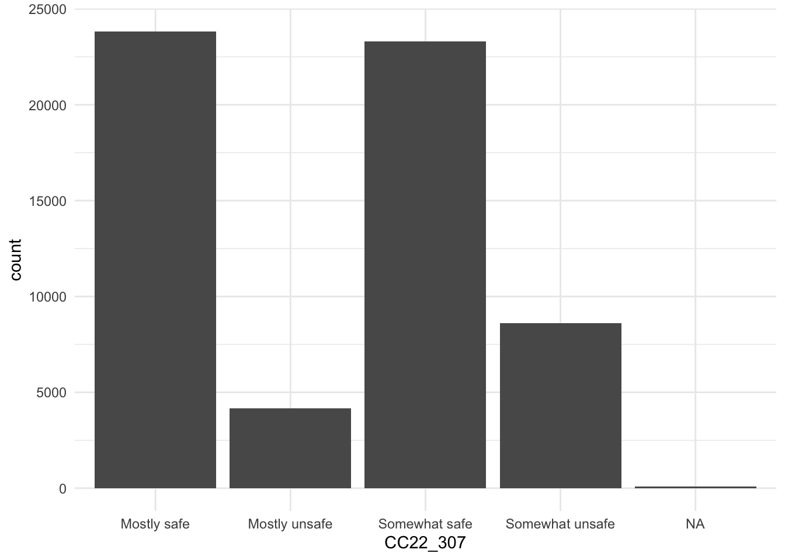
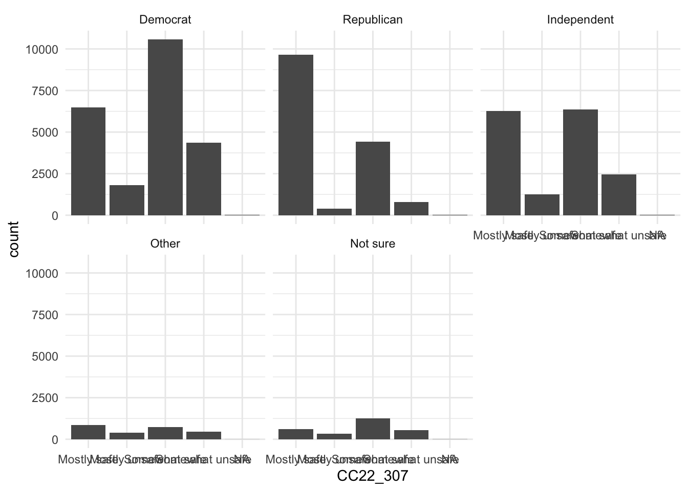
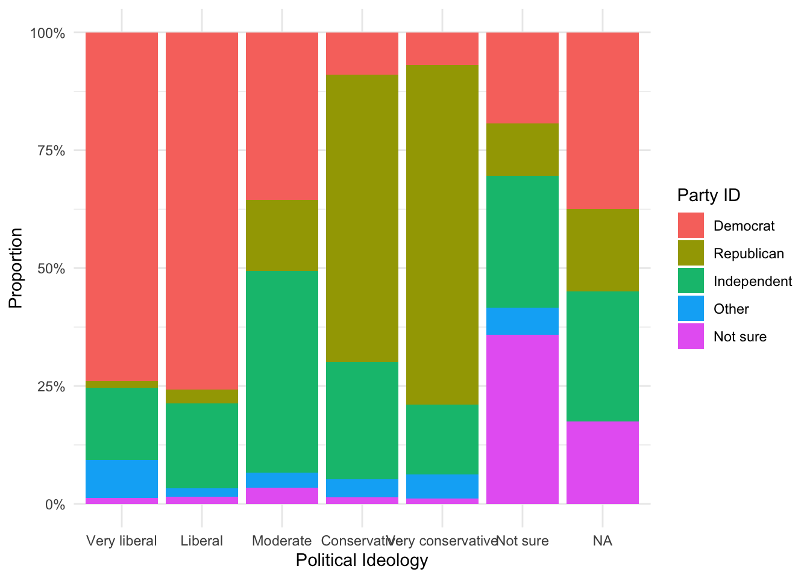
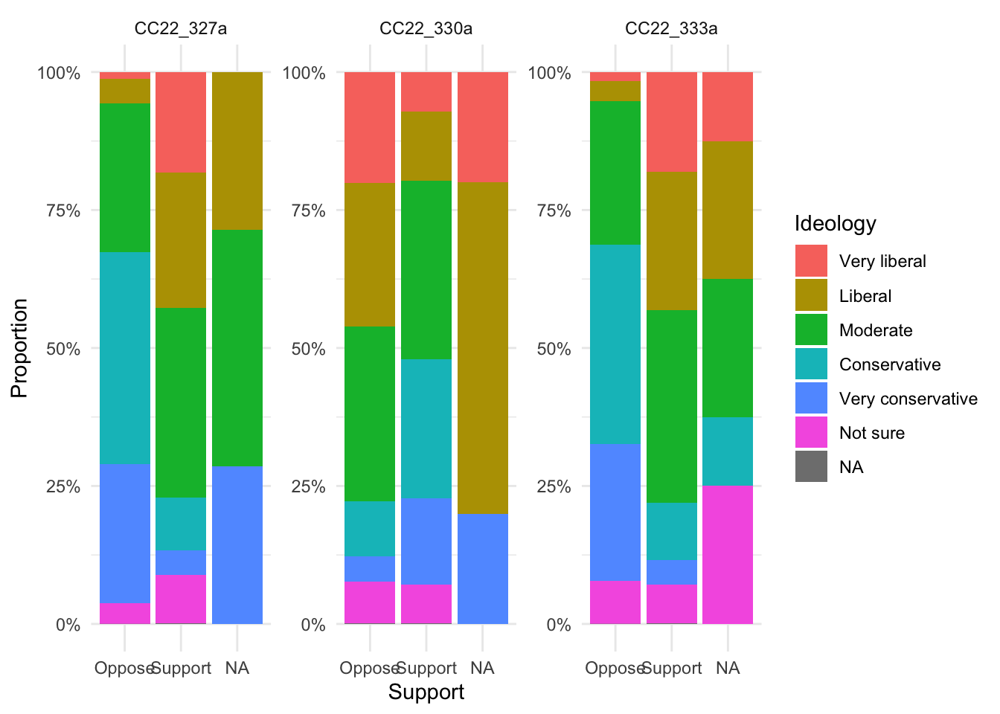
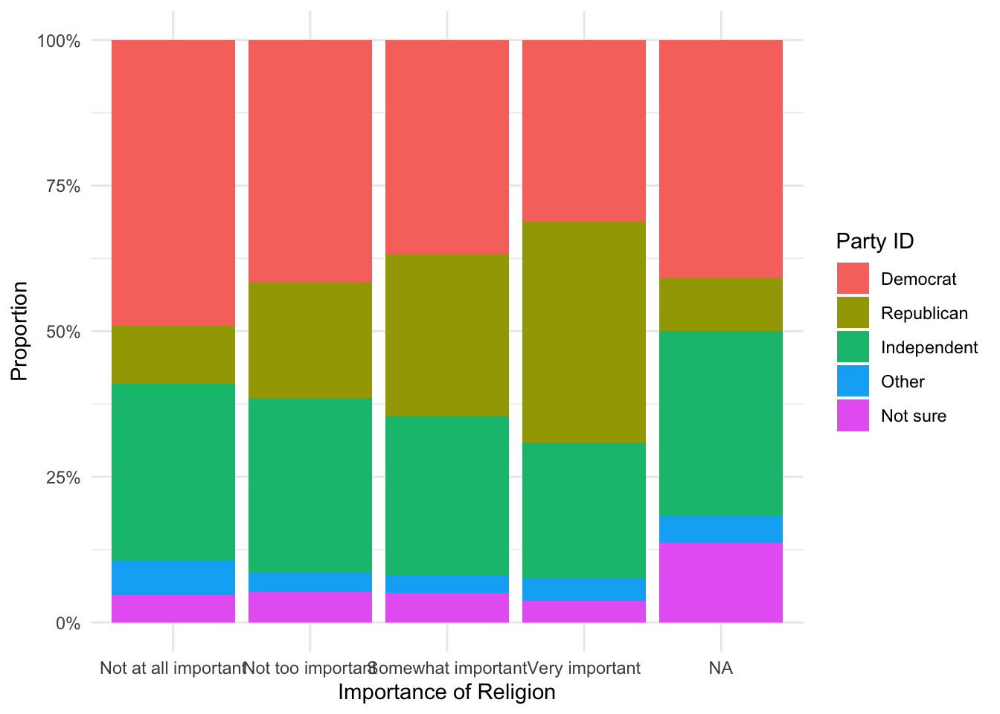

library(tidyverse)test
root <- rprojroot::find_root(rprojroot::has_file("Exploring-Public-Opinion.Rproj"))
ces_2022_raw <- read_csv(file.path(root, "Data", "CCES22_Common_OUTPUT_vv_topost.csv"))ces_2022 <- ces_2022_raw |>
select(-...1, -CCEStake, -add_confirm, -inputzip, -gender4_t, -comptype, -votereg_f, -regzip, -CC22_302, -CC22_303, -CC22_304, -CC22_309a_1, -CC22_309a_2, -CC22_309a_3, -CC22_309a_4, -CC22_309a_5, -CC22_306, -CC22_309b_1, -CC22_309b_2, -CC22_309b_3, -CC22_309b_4, -CC22_309c_1, -CC22_309c_2, -CC22_309c_3, -CC22_309c_4, -CC22_309c_5, -CC22_309c_6, -CC22_309c_7, -CC22_309c_8, -CC22_309c_9, -CC22_309c_10, -CC22_310a, -CC22_310b, -CC22_310c, -CC22_310d, -CC22_311a, -CC22_311b, -CC22_311c, -CC22_311d, -CC22_320d, -CC22_320e, -CC22_320f, -CC22_320g, -CC22_320h, -CC22_340b, -CC22_340h, -CC22_340i, -CC22_340j, -CC22_340k, -CC22_340l, -CC22_340m, -CC22_340n, -CC22_361, -CC22_365_voted, -CC22_365_voted_t, -CC22_365b_voted, -CC22_365b_voted_t, -CC22_366_voted, -CC22_366_voted_t, -CC22_367_voted, -CC22_367_voted_t, -CC22_365, -CC22_365_t, -CC22_365a, -CC22_365a_t, -CC22_365b, -CC22_365b_t, -CC22_365c, -CC22_365c_t, -CC22_366, -CC22_366_t, -CC22_367, -CC22_367_t, -CC22_367a, -CC22_367a_t, -hadjob, -union_coverage, -unionhh, -healthins2
)
ces_2022 <- ces_2022[, 1:253]
ces_2022_clean <- ces_2022 |>
mutate(
gender4 = case_when(
gender4 == 1 ~ "Man",
gender4 == 2 ~ "Woman",
gender4 == 3 ~ "Non-binary",
gender4 == 4 ~ "Other",
),
educ = case_when(
educ == 1 ~ "Did not graduate from high school",
educ == 2 ~ "High school graduate",
educ == 3 ~ "Some college, but no degree (yet)",
educ == 4 ~ "2-year college degree",
educ == 5 ~ "4-year college degree",
educ == 6 ~ "Postgraduate degree (MA, MBA, MD, JD, PhD, etc.)"
),
race = case_when(
race == 1 ~ "White",
race == 2 ~ "Black or African-American",
race == 3 ~ "Hispanic or Latino",
race == 4 ~ "Asian or Asian-American",
race == 5 ~ "Native American",
race == 6 ~ "Two or more races",
race == 7 ~ "Other",
race == 8 ~ "Middle Eastern"
),
hispanic = if_else(hispanic == 1, "Yes", "No"),
multrace_1 = ifelse(multrace_1 == 1, "Yes", "No"),
multrace_2 = ifelse(multrace_2 == 1, "Yes", "No"),
multrace_3 = ifelse(multrace_3 == 1, "Yes", "No"),
multrace_4 = ifelse(multrace_4 == 1, "Yes", "No"),
multrace_5 = ifelse(multrace_5 == 1, "Yes", "No"),
multrace_8 = ifelse(multrace_8 == 1, "Yes", "No"),
multrace_97 = ifelse(multrace_97 == 1, "Yes", "No"),
multrace_98 = ifelse(multrace_98 == 1, "Yes", "No"),
votereg = case_when(
votereg == 1 ~ "Yes",
votereg == 2 ~ "No",
votereg == 3 ~ "Don't know"
),
pid3 = case_when(
pid3 == 1 ~ "Democrat",
pid3 == 2 ~ "Republican",
pid3 == 3 ~ "Independent",
pid3 == 4 ~ "Other",
pid3 == 5 ~ "Not sure"
),
pid7 = case_when(
pid7 == 1 ~ "Strong Democrat",
pid7 == 2 ~ "Not very strong Democrat",
pid7 == 3 ~ "The Democratic Party",
pid7 == 4 ~ "Neither",
pid7 == 5 ~ "The Republican Party",
pid7 == 6 ~ "Not very strong Republican",
pid7 == 7 ~ "Strong Republican",
pid7 == 8 ~ "Not sure",
pid7 == 9 ~ "Don't know"
),
inputstate = case_when(
inputstate == 1 ~ "Alabama", inputstate == 2 ~ "Alaska",
inputstate == 4 ~ "Arizona", inputstate == 5 ~ "Arkansas",
inputstate == 6 ~ "California", inputstate == 8 ~ "Colorado",
inputstate == 9 ~ "Connecticut", inputstate == 10 ~ "Delaware",
inputstate == 11 ~ "District of Columbia", inputstate == 12 ~ "Florida",
inputstate == 13 ~ "Georgia", inputstate == 15 ~ "Hawaii",
inputstate == 16 ~ "Idaho", inputstate == 17 ~ "Illinois",
inputstate == 18 ~ "Indiana", inputstate == 19 ~ "Iowa",
inputstate == 20 ~ "Kansas", inputstate == 21 ~ "Kentucky",
inputstate == 22 ~ "Louisiana", inputstate == 23 ~ "Maine",
inputstate == 24 ~ "Maryland", inputstate == 25 ~ "Massachusetts",
inputstate == 26 ~ "Michigan", inputstate == 27 ~ "Minnesota",
inputstate == 28 ~ "Mississippi", inputstate == 29 ~ "Missouri",
inputstate == 30 ~ "Montana", inputstate == 31 ~ "Nebraska",
inputstate == 32 ~ "Nevada", inputstate == 33 ~ "New Hampshire",
inputstate == 34 ~ "New Jersey", inputstate == 35 ~ "New Mexico",
inputstate == 36 ~ "New York", inputstate == 37 ~ "North Carolina",
inputstate == 38 ~ "North Dakota", inputstate == 39 ~ "Ohio",
inputstate == 40 ~ "Oklahoma", inputstate == 41 ~ "Oregon",
inputstate == 42 ~ "Pennsylvania", inputstate == 44 ~ "Rhode Island",
inputstate == 45 ~ "South Carolina", inputstate == 46 ~ "South Dakota",
inputstate == 47 ~ "Tennessee", inputstate == 48 ~ "Texas",
inputstate == 49 ~ "Utah", inputstate == 50 ~ "Vermont",
inputstate == 51 ~ "Virginia", inputstate == 53 ~ "Washington",
inputstate == 54 ~ "West Virginia", inputstate == 55 ~ "Wisconsin",
inputstate == 56 ~ "Wyoming"
),
region = case_when(
region == 1 ~ "Northeast",
region == 2 ~ "Midwest",
region == 3 ~ "South",
region == 4 ~ "West"
),
ccesmodule = case_when(
ccesmodule == 1 ~ "NCC", ccesmodule == 2 ~ "MIA",
ccesmodule == 3 ~ "TTU", ccesmodule == 4 ~ "RUT",
ccesmodule == 5 ~ "MSU", ccesmodule == 6 ~ "FSU",
ccesmodule == 7 ~ "LSU", ccesmodule == 8 ~ "JHU",
ccesmodule == 9 ~ "IUA", ccesmodule == 10 ~ "BOS",
ccesmodule == 11 ~ "DKU", ccesmodule == 12 ~ "NCW",
ccesmodule == 13 ~ "WUS", ccesmodule == 14 ~ "USC",
ccesmodule == 15 ~ "ZOU", ccesmodule == 16 ~ "MIC",
ccesmodule == 17 ~ "BCJ", ccesmodule == 18 ~ "CPC",
ccesmodule == 19 ~ "ASU", ccesmodule == 20 ~ "CAC",
ccesmodule == 21 ~ "UWM", ccesmodule == 22 ~ "UCR",
ccesmodule == 23 ~ "GTN", ccesmodule == 24 ~ "BTU",
ccesmodule == 25 ~ "UTA", ccesmodule == 26 ~ "UTB",
ccesmodule == 27 ~ "UVA", ccesmodule == 28 ~ "NCK",
ccesmodule == 29 ~ "UTD", ccesmodule == 30 ~ "GWU",
ccesmodule == 31 ~ "CUB", ccesmodule == 32 ~ "OSU",
ccesmodule == 33 ~ "IOW", ccesmodule == 34 ~ "UCL",
ccesmodule == 35 ~ "DKN", ccesmodule == 36 ~ "CLA",
ccesmodule == 37 ~ "LBU", ccesmodule == 38 ~ "UND",
ccesmodule == 39 ~ "TAM", ccesmodule == 40 ~ "WAS",
ccesmodule == 41 ~ "YLS", ccesmodule == 42 ~ "UGA",
ccesmodule == 43 ~ "TUF", ccesmodule == 44 ~ "DAR",
ccesmodule == 45 ~ "NYU", ccesmodule == 46 ~ "VAN",
ccesmodule == 47 ~ "UCM", ccesmodule == 48 ~ "UMA",
ccesmodule == 49 ~ "UDE", ccesmodule == 50 ~ "MIZ",
ccesmodule == 51 ~ "BYU", ccesmodule == 52 ~ "EMY",
ccesmodule == 53 ~ "RCO", ccesmodule == 54 ~ "MSL",
ccesmodule == 55 ~ "MCS", ccesmodule == 56 ~ "HUA",
ccesmodule == 57 ~ "HUB", ccesmodule == 58 ~ "AMU",
ccesmodule == 59 ~ "UMB / CGU", ccesmodule == 60 ~ "DMC / HKS"
),
CC22_300_1 = ifelse(CC22_300_1 == 1, "Yes", "No"),
CC22_300_2 = ifelse(CC22_300_2 == 1, "Yes", "No"),
CC22_300_3 = ifelse(CC22_300_3 == 1, "Yes", "No"),
CC22_300_4 = ifelse(CC22_300_4 == 1, "Yes", "No"),
CC22_300_5 = ifelse(CC22_300_5 == 1, "Yes", "No"),
CC22_300a = case_when(
CC22_300a == 1 ~ "Local Newscast",
CC22_300a == 2 ~ "National Newscast",
CC22_300a == 3 ~ "Both"
),
CC22_300c = case_when(
CC22_300c == 1 ~ "Print",
CC22_300c == 2 ~ "Online",
CC22_300c == 3 ~ "Both"
),
CC22_300b_1 = ifelse(CC22_300b_1 == 1, "Yes", "No"),
CC22_300b_2 = ifelse(CC22_300b_2 == 1, "Yes", "No"),
CC22_300b_3 = ifelse(CC22_300b_3 == 1, "Yes", "No"),
CC22_300b_4 = ifelse(CC22_300b_4 == 1, "Yes", "No"),
CC22_300b_5 = ifelse(CC22_300b_5 == 1, "Yes", "No"),
CC22_300b_6 = ifelse(CC22_300b_6 == 1, "Yes", "No"),
CC22_300b_7 = ifelse(CC22_300b_7 == 1, "Yes", "No"),
CC22_300b_8 = ifelse(CC22_300b_8 == 1, "Yes", "No"),
CC22_300d_1 = ifelse(CC22_300d_1 == 1, "Yes", "No"),
CC22_300d_2 = ifelse(CC22_300d_2 == 1, "Yes", "No"),
CC22_300d_3 = ifelse(CC22_300d_3 == 1, "Yes", "No"),
CC22_300d_4 = ifelse(CC22_300d_4 == 1, "Yes", "No"),
CC22_300d_5 = ifelse(CC22_300d_5 == 1, "Yes", "No"),
CC22_300d_6 = ifelse(CC22_300d_6 == 1, "Yes", "No"),
CC22_305_1 = ifelse(CC22_305_1 == 1, "Yes", "No"),
CC22_305_2 = ifelse(CC22_305_2 == 1, "Yes", "No"),
CC22_305_3 = ifelse(CC22_305_3 == 1, "Yes", "No"),
CC22_305_4 = ifelse(CC22_305_4 == 1, "Yes", "No"),
CC22_305_5 = ifelse(CC22_305_5 == 1, "Yes", "No"),
CC22_305_6 = ifelse(CC22_305_6 == 1, "Yes", "No"),
CC22_305_7 = ifelse(CC22_305_7 == 1, "Yes", "No"),
CC22_305_9 = ifelse(CC22_305_9 == 1, "Yes", "No"),
CC22_305_10 = ifelse(CC22_305_10 == 1, "Yes", "No"),
CC22_305_11 = ifelse(CC22_305_11 == 1, "Yes", "No"),
CC22_305_12 = ifelse(CC22_305_12 == 1, "Yes", "No"),
CC22_305_13 = ifelse(CC22_305_13 == 1, "Yes", "No"),
CC22_307 = case_when(
CC22_307 == 1 ~ "Mostly safe",
CC22_307 == 2 ~ "Somewhat safe",
CC22_307 == 3 ~ "Somewhat unsafe",
CC22_307 == 4 ~ "Mostly unsafe"
),
CC22_309dx_1 = ifelse(CC22_309dx_1 == 1, "Yes", "No"),
CC22_309dx_2 = ifelse(CC22_309dx_2 == 1, "Yes", "No"),
CC22_309dx_3 = ifelse(CC22_309dx_3 == 1, "Yes", "No"),
CC22_309dx_4 = ifelse(CC22_309dx_4 == 1, "Yes", "No"),
CC22_309dx_5 = ifelse(CC22_309dx_5 == 1, "Yes", "No"),
CC22_309dx_6 = ifelse(CC22_309dx_6 == 1, "Yes", "No"),
CC22_309dx_7 = ifelse(CC22_309dx_7 == 1, "Yes", "No"),
CC22_309dx_8 = ifelse(CC22_309dx_8 == 1, "Yes", "No"),
CC22_309dx_9 = ifelse(CC22_309dx_9 == 1, "Yes", "No"),
CC22_309e = case_when(
CC22_309e == 1 ~ "Excellent",
CC22_309e == 2 ~ "Very good",
CC22_309e == 3 ~ "Good",
CC22_309e == 4 ~ "Fair",
CC22_309e == 5 ~ "Poor"
),
CC22_309f = case_when(
CC22_309f == 1 ~ "Excellent",
CC22_309f == 2 ~ "Very good",
CC22_309f == 3 ~ "Good",
CC22_309f == 4 ~ "Fair",
CC22_309f == 5 ~ "Poor"
),
CC22_320a = case_when(
CC22_320a == 1 ~ "Strongly approve",
CC22_320a == 2 ~ "Somewhat approve",
CC22_320a == 3 ~ "Somewhat disapprove",
CC22_320a == 4 ~ "Strongly disapprove",
CC22_320a == 5 ~ "Not sure"
),
CC22_320b = case_when(
CC22_320b == 1 ~ "Strongly approve",
CC22_320b == 2 ~ "Somewhat approve",
CC22_320b == 3 ~ "Somewhat disapprove",
CC22_320b == 4 ~ "Strongly disapprove",
CC22_320b == 5 ~ "Not sure"
),
CC22_320c = case_when(
CC22_320c == 1 ~ "Strongly approve",
CC22_320c == 2 ~ "Somewhat approve",
CC22_320c == 3 ~ "Somewhat disapprove",
CC22_320c == 4 ~ "Strongly disapprove",
CC22_320c == 5 ~ "Not sure"
),
cit1 = if_else(cit1 == 1, "Yes", "No"),
immstat = case_when(
immstat == 1 ~ "Immigrant and naturalized citizen",
immstat == 2 ~ "Immigrant, not a citizen",
immstat == 3 ~ "Born in USA, parent(s) immigrant(s)",
immstat == 4 ~ "Born in USA, parent(s) born in USA, grandparent(s) immigrant(s)",
immstat == 5 ~ "Parents, grandparents, and self born in USA"
),
CC22_321_1 = ifelse(CC22_321_1 == 1, "Yes", "No"),
CC22_321_2 = ifelse(CC22_321_2 == 1, "Yes", "No"),
CC22_321_3 = ifelse(CC22_321_3 == 1, "Yes", "No"),
CC22_321_4 = ifelse(CC22_321_4 == 1, "Yes", "No"),
CC22_321_5 = ifelse(CC22_321_5 == 1, "Yes", "No"),
CC22_321_6 = ifelse(CC22_321_6 == 1, "Yes", "No"),
CC22_321_7 = ifelse(CC22_321_7 == 1, "Yes", "No"),
CC22_321_8 = ifelse(CC22_321_8 == 1, "Yes", "No"),
CC22_327a = if_else(CC22_327a == 1, "Support", "Oppose"),
CC22_327b = if_else(CC22_327b == 1, "Support", "Oppose"),
CC22_327c = if_else(CC22_327c == 1, "Support", "Oppose"),
CC22_327d = if_else(CC22_327d == 1, "Support", "Oppose"),
CC22_330a = if_else(CC22_330a == 1, "Support", "Oppose"),
CC22_330b = if_else(CC22_330b == 1, "Support", "Oppose"),
CC22_330c = if_else(CC22_330c == 1, "Support", "Oppose"),
CC22_330d = if_else(CC22_330d == 1, "Support", "Oppose"),
CC22_330e = if_else(CC22_330e == 1, "Support", "Oppose"),
CC22_330f = if_else(CC22_330f == 1, "Support", "Oppose"),
CC22_331a = if_else(CC22_331a == 1, "Support", "Oppose"),
CC22_331b = if_else(CC22_331b == 1, "Support", "Oppose"),
CC22_331c = if_else(CC22_331c == 1, "Support", "Oppose"),
CC22_331d = if_else(CC22_331d == 1, "Support", "Oppose"),
CC22_332a = if_else(CC22_332a == 1, "Support", "Oppose"),
CC22_332b = if_else(CC22_332b == 1, "Support", "Oppose"),
CC22_332c = if_else(CC22_332c == 1, "Support", "Oppose"),
CC22_332d = if_else(CC22_332d == 1, "Support", "Oppose"),
CC22_332e = if_else(CC22_332e == 1, "Support", "Oppose"),
CC22_332f = if_else(CC22_332f == 1, "Support", "Oppose"),
CC22_333 = case_when(
CC22_333 == 1 ~ "Immediate action is necessary",
CC22_333 == 2 ~ "Some action should be taken",
CC22_333 == 3 ~ "More research is necessary",
CC22_333 == 4 ~ "Concern is exaggerated",
CC22_333 == 5 ~ "Climate change is not occurring"
),
CC22_333a = if_else(CC22_333a == 1, "Support", "Oppose"),
CC22_333b = if_else(CC22_333b == 1, "Support", "Oppose"),
CC22_333c = if_else(CC22_333c == 1, "Support", "Oppose"),
CC22_333d = if_else(CC22_333d == 1, "Support", "Oppose"),
CC22_333e = if_else(CC22_333e == 1, "Support", "Oppose"),
CC22_334a = if_else(CC22_334a == 1, "Support", "Oppose"),
CC22_334b = if_else(CC22_334b == 1, "Support", "Oppose"),
CC22_334c = if_else(CC22_334c == 1, "Support", "Oppose"),
CC22_334d = if_else(CC22_334d == 1, "Support", "Oppose"),
CC22_334e = if_else(CC22_334e == 1, "Support", "Oppose"),
CC22_334f = if_else(CC22_334f == 1, "Support", "Oppose"),
CC22_334g = if_else(CC22_334g == 1, "Support", "Oppose"),
CC22_334h = if_else(CC22_334h == 1, "Support", "Oppose"),
CC22_340a = case_when(
CC22_340a == 1 ~ "Very liberal",
CC22_340a == 2 ~ "Liberal",
CC22_340a == 3 ~ "Somewhat liberal",
CC22_340a == 4 ~ "Middle of the road",
CC22_340a == 5 ~ "Somewhat conservative",
CC22_340a == 6 ~ "Conservative",
CC22_340a == 7 ~ "Very conservative",
CC22_340a == 8 ~ "Not sure"
),
CC22_340c = case_when(
CC22_340c == 1 ~ "Very liberal",
CC22_340c == 2 ~ "Liberal",
CC22_340c == 3 ~ "Somewhat liberal",
CC22_340c == 4 ~ "Middle of the road",
CC22_340c == 5 ~ "Somewhat conservative",
CC22_340c == 6 ~ "Conservative",
CC22_340c == 7 ~ "Very conservative",
CC22_340c == 8 ~ "Not sure"
),
CC22_340d = case_when(
CC22_340d == 1 ~ "Very liberal",
CC22_340d == 2 ~ "Liberal",
CC22_340d == 3 ~ "Somewhat liberal",
CC22_340d == 4 ~ "Middle of the road",
CC22_340d == 5 ~ "Somewhat conservative",
CC22_340d == 6 ~ "Conservative",
CC22_340d == 7 ~ "Very conservative",
CC22_340d == 8 ~ "Not sure"
),
CC22_340e = case_when(
CC22_340e == 1 ~ "Very liberal",
CC22_340e == 2 ~ "Liberal",
CC22_340e == 3 ~ "Somewhat liberal",
CC22_340e == 4 ~ "Middle of the road",
CC22_340e == 5 ~ "Somewhat conservative",
CC22_340e == 6 ~ "Conservative",
CC22_340e == 7 ~ "Very conservative",
CC22_340e == 8 ~ "Not sure"
),
CC22_340f = case_when(
CC22_340f == 1 ~ "Very liberal",
CC22_340f == 2 ~ "Liberal",
CC22_340f == 3 ~ "Somewhat liberal",
CC22_340f == 4 ~ "Middle of the road",
CC22_340f == 5 ~ "Somewhat conservative",
CC22_340f == 6 ~ "Conservative",
CC22_340f == 7 ~ "Very conservative",
CC22_340f == 8 ~ "Not sure"
),
CC22_340g = case_when(
CC22_340g == 1 ~ "Very liberal",
CC22_340g == 2 ~ "Liberal",
CC22_340g == 3 ~ "Somewhat liberal",
CC22_340g == 4 ~ "Middle of the road",
CC22_340g == 5 ~ "Somewhat conservative",
CC22_340g == 6 ~ "Conservative",
CC22_340g == 7 ~ "Very conservative",
CC22_340g == 8 ~ "Not sure"
),
CC22_350a = if_else(CC22_350a == 1, "Support", "Oppose"),
CC22_350b = if_else(CC22_350b == 1, "Support", "Oppose"),
CC22_350c = if_else(CC22_350c == 1, "Support", "Oppose"),
CC22_350d = if_else(CC22_350d == 1, "Support", "Oppose"),
CC22_350e = if_else(CC22_350e == 1, "Support", "Oppose"),
CC22_350f = if_else(CC22_350f == 1, "Support", "Oppose"),
CC22_350g = if_else(CC22_350g == 1, "Support", "Oppose"),
CC22_350h = if_else(CC22_350h == 1, "Support", "Oppose"),
CC22_355a = if_else(CC22_355a == 1, "Support", "Oppose"),
CC22_355b = if_else(CC22_355b == 1, "Support", "Oppose"),
CC22_355c = if_else(CC22_355c == 1, "Support", "Oppose"),
CC22_355d = if_else(CC22_355d == 1, "Support", "Oppose"),
CC22_355e = if_else(CC22_355e == 1, "Support", "Oppose"),
CC22_360 = case_when(
CC22_360 == 1 ~ "No Party, Independent, Declined to State",
CC22_360 == 2 ~ "Democratic Party",
CC22_360 == 3 ~ "Republican Party",
CC22_360 == 4 ~ "Other"
),
urbancity = case_when(
urbancity == 1 ~ "City",
urbancity == 2 ~ "Suburb",
urbancity == 3 ~ "Town",
urbancity == 4 ~ "Rural area",
urbancity == 5 ~ "Other"
),
presvote20post = case_when(
presvote20post == 1 ~ "Joe Biden",
presvote20post == 2 ~ "Donald Trump",
presvote20post == 3 ~ "Jo Jorgensen",
presvote20post == 4 ~ "Howie Hawkins",
presvote20post == 5 ~ "Other",
presvote20post == 6 ~ "Did not vote for President"
),
CC22_363 = case_when(
CC22_363 == 1 ~ "Yes, definitely",
CC22_363 == 2 ~ "Probably",
CC22_363 == 3 ~ "I already voted (early or absentee)",
CC22_363 == 4 ~ "I plan to vote before November 8th",
CC22_363 == 5 ~ "No",
CC22_363 == 6 ~ "Undecided"
),
ideo5 = case_when(
ideo5 == 1 ~ "Very liberal",
ideo5 == 2 ~ "Liberal",
ideo5 == 3 ~ "Moderate",
ideo5 == 4 ~ "Conservative",
ideo5 == 5 ~ "Very conservative",
ideo5 == 6 ~ "Not sure"
),
employ = case_when(
employ == 1 ~ "Working full time now",
employ == 2 ~ "Working part time now",
employ == 3 ~ "Temporarily laid off",
employ == 4 ~ "Unemployed",
employ == 5 ~ "Retired",
employ == 6 ~ "Permanently disabled",
employ == 7 ~ "Taking care of home or family",
employ == 8 ~ "Student",
employ == 9 ~ "Other"
),
investor = if_else(investor == 1, "Yes", "No"),
pew_bornagain = if_else(pew_bornagain == 1, "Yes", "No"),
pew_religimp = case_when(
pew_religimp == 1 ~ "Very important",
pew_religimp == 2 ~ "Somewhat important",
pew_religimp == 3 ~ "Not too important",
pew_religimp == 4 ~ "Not at all important"
),
pew_churatd = case_when(
pew_churatd == 1 ~ "More than once a week",
pew_churatd == 2 ~ "Once a week",
pew_churatd == 3 ~ "Once or twice a month",
pew_churatd == 4 ~ "A few times a year",
pew_churatd == 5 ~ "Seldom",
pew_churatd == 6 ~ "Never",
pew_churatd == 7 ~ "Don't know"
),
pew_prayer = case_when(
pew_prayer == 1 ~ "Several times a day",
pew_prayer == 2 ~ "Once a day",
pew_prayer == 3 ~ "A few times a week",
pew_prayer == 4 ~ "Once a week",
pew_prayer == 5 ~ "A few times a month",
pew_prayer == 6 ~ "Seldom",
pew_prayer == 7 ~ "Never",
pew_prayer == 8 ~ "Don't know"
),
religpew = case_when(
religpew == 1 ~ "Protestant",
religpew == 2 ~ "Roman Catholic",
religpew == 3 ~ "Mormon",
religpew == 4 ~ "Eastern or Greek Orthodox",
religpew == 5 ~ "Jewish",
religpew == 6 ~ "Muslim",
religpew == 7 ~ "Buddhist",
religpew == 8 ~ "Hindu",
religpew == 9 ~ "Atheist",
religpew == 10 ~ "Agnostic",
religpew == 11 ~ "Nothing in particular",
religpew == 12 ~ "Something else"
),
religpew_protestant = case_when(
religpew_protestant == 1 ~ "Baptist",
religpew_protestant == 2 ~ "Methodist",
religpew_protestant == 3 ~ "Nondenominational or Independent Church",
religpew_protestant == 4 ~ "Lutheran",
religpew_protestant == 5 ~ "Presbyterian",
religpew_protestant == 6 ~ "Pentecostal",
religpew_protestant == 7 ~ "Episcopalian",
religpew_protestant == 8 ~ "Church of Christ or Disciples of Christ",
religpew_protestant == 9 ~ "Congregational or United Church of Christ",
religpew_protestant == 10 ~ "Holiness",
religpew_protestant == 11 ~ "Reformed",
religpew_protestant == 12 ~ "Adventist",
religpew_protestant == 13 ~ "Jehovah's Witness",
religpew_protestant == 90 ~ "Something else"
),
religpew_baptist = case_when(
religpew_baptist == 1 ~ "Southern Baptist Convention",
religpew_baptist == 2 ~ "American Baptist Churches in USA",
religpew_baptist == 3 ~ "National Baptist Convention",
religpew_baptist == 4 ~ "Progressive Baptist Convention",
religpew_baptist == 5 ~ "Independent Baptist",
religpew_baptist == 6 ~ "Baptist General Conference",
religpew_baptist == 7 ~ "Baptist Missionary Association",
religpew_baptist == 8 ~ "Conservative Baptist Assoc. of America",
religpew_baptist == 9 ~ "Free Will Baptist",
religpew_baptist == 10 ~ "General Association of Regular Baptists",
religpew_baptist == 90 ~ "Other Baptist"
),
religpew_methodist = case_when(
religpew_methodist == 1 ~ "United Methodist Church",
religpew_methodist == 2 ~ "Free Methodist Church",
religpew_methodist == 3 ~ "African Methodist Episcopal",
religpew_methodist == 4 ~ "African Methodist Episcopal Zion",
religpew_methodist == 5 ~ "Christian Methodist Episcopal Church",
religpew_methodist == 90 ~ "Other Methodist Church"
),
religpew_nondenom = case_when(
religpew_nondenom == 1 ~ "Nondenominational evangelical",
religpew_nondenom == 2 ~ "Nondenominational fundamentalist",
religpew_nondenom == 3 ~ "Nondenominational charismatic",
religpew_nondenom == 4 ~ "Interdenominational",
religpew_nondenom == 5 ~ "Community church",
religpew_nondenom == 90 ~ "Other"
),
religpew_lutheran = case_when(
religpew_lutheran == 1 ~ "Evangelical Lutheran Church in America (ELCA)",
religpew_lutheran == 2 ~ "Lutheran Church, Missouri Synod",
religpew_lutheran == 3 ~ "Lutheran Church, Wisconsin Synod",
religpew_lutheran == 4 ~ "Other Lutheran Church"
),
religpew_presby = case_when(
religpew_presby == 1 ~ "Presbyterian Church USA",
religpew_presby == 2 ~ "Presbyterian Church in America",
religpew_presby == 3 ~ "Associate Reformed Presbyterian",
religpew_presby == 4 ~ "Cumberland Presbyterian Church",
religpew_presby == 5 ~ "Orthodox Presbyterian",
religpew_presby == 6 ~ "Evangelical Presbyterian Church",
religpew_presby == 90 ~ "Other Presbyterian Church"
),
religpew_pentecost = case_when(
religpew_pentecost == 1 ~ "Assemblies of God",
religpew_pentecost == 2 ~ "Church of God Cleveland TN",
religpew_pentecost == 3 ~ "Four Square Gospel",
religpew_pentecost == 4 ~ "Pentecostal Church of God",
religpew_pentecost == 5 ~ "Pentecostal Holiness Church",
religpew_pentecost == 6 ~ "Church of God in Christ",
religpew_pentecost == 7 ~ "Church of God of the Apostolic Faith",
religpew_pentecost == 8 ~ "Assembly of Christian Churches",
religpew_pentecost == 9 ~ "Apostolic Christian",
religpew_pentecost == 90 ~ "Other Pentecostal Church"
),
religpew_episcop = case_when(
religpew_episcop == 1 ~ "Episcopal Church in the USA",
religpew_episcop == 2 ~ "Anglican Church (Church of England)",
religpew_episcop == 3 ~ "Anglican Orthodox Church",
religpew_episcop == 4 ~ "Reformed Episcopal Church",
religpew_episcop == 90 ~ "Other Episcopalian or Anglican Church"
),
religpew_christian = case_when(
religpew_christian == 1 ~ "Church of Christ",
religpew_christian == 2 ~ "Disciples of Christ",
religpew_christian == 3 ~ "Christian Churches and Churches of Christ",
religpew_christian == 90 ~ "Other Christian church"
),
religpew_congreg = case_when(
religpew_congreg == 1 ~ "United Church of Christ",
religpew_congreg == 2 ~ "Conservative Congregational Christian",
religpew_congreg == 3 ~ "National Association of Congregational Christians",
religpew_congreg == 90 ~ "Other Congregational"
),
religpew_holiness = case_when(
religpew_holiness == 1 ~ "Church of the Nazarene",
religpew_holiness == 2 ~ "Wesleyan Church",
religpew_holiness == 3 ~ "Free Methodist Church",
religpew_holiness == 4 ~ "Christian and Missionary Alliance",
religpew_holiness == 5 ~ "Church of God (Anderson, Indiana)",
religpew_holiness == 6 ~ "Salvation Army, American Rescue workers",
religpew_holiness == 90 ~ "Other Holiness"
),
religpew_reformed = case_when(
religpew_reformed == 1 ~ "Reformed Church in America",
religpew_reformed == 2 ~ "Christian Reformed Church",
religpew_reformed == 90 ~ "Other Reformed"
),
religpew_advent = case_when(
religpew_advent == 1 ~ "Seventh Day Adventist",
religpew_advent == 2 ~ "Church of God, General Conference",
religpew_advent == 3 ~ "Advent Christian",
religpew_advent == 90 ~ "Other Adventist"
),
religpew_catholic = case_when(
religpew_catholic == 1 ~ "Roman Catholic Church",
religpew_catholic == 2 ~ "National Polish Catholic Church",
religpew_catholic == 3 ~ "Greek-rite Catholic",
religpew_catholic == 4 ~ "Armenian Catholic",
religpew_catholic == 5 ~ "Old Catholic",
religpew_catholic == 90 ~ "Other Catholic"
),
religpew_mormon = case_when(
religpew_mormon == 1 ~ "The Church of Jesus Christ of Latter-day Saints",
religpew_mormon == 2 ~ "Community of Christ",
religpew_mormon == 90 ~ "Other Mormon"
),
religpew_orthodox = case_when(
religpew_orthodox == 1 ~ "Greek Orthodox",
religpew_orthodox == 2 ~ "Russian Orthodox",
religpew_orthodox == 3 ~ "Orthodox Church in America",
religpew_orthodox == 4 ~ "Armenian Orthodox",
religpew_orthodox == 5 ~ "Eastern Orthodox",
religpew_orthodox == 6 ~ "Serbian Orthodox",
religpew_orthodox == 90 ~ "Other Orthodox"
),
religpew_jewish = case_when(
religpew_jewish == 1 ~ "Reform",
religpew_jewish == 2 ~ "Conservative",
religpew_jewish == 3 ~ "Orthodox",
religpew_jewish == 4 ~ "Reconstructionist",
religpew_jewish == 90 ~ "Other"
),
religpew_muslim = case_when(
religpew_muslim == 1 ~ "Sunni",
religpew_muslim == 2 ~ "Shia",
religpew_muslim == 3 ~ "Nation of Islam (Black Muslim)",
religpew_muslim == 90 ~ "Other Muslim"
),
religpew_buddhist = case_when(
religpew_buddhist == 1 ~ "Theravada (Vipassana) Buddhism",
religpew_buddhist == 2 ~ "Mahayana (Zen) Buddhism",
religpew_buddhist == 3 ~ "Vajrayana (Tibetan) Buddhism",
religpew_buddhist == 90 ~ "Other Buddhist"
),
religpew_hindu = case_when(
religpew_hindu == 1 ~ "Vaishnava Hinduism",
religpew_hindu == 2 ~ "Shaivite Hinduism",
religpew_hindu == 3 ~ "Shaktism Hinduism",
religpew_hindu == 90 ~ "Other Hindu"
),
marstat = case_when(
marstat == 1 ~ "Married",
marstat == 2 ~ "Separated",
marstat == 3 ~ "Divorced",
marstat == 4 ~ "Widowed",
marstat == 5 ~ "Never married",
marstat == 6 ~ "Domestic / civil partnership"
),
union = case_when(
union == 1 ~ "Yes, I am currently a member of a labor union",
union == 2 ~ "I formerly was a member of a labor union",
union == 3 ~ "I am not now, nor have I been, a member of a labor union"
),
dualcit = if_else(dualcit == 1, "Yes", "No"),
dualctry = as.character(dualctry), # country code variable
ownhome = case_when(
ownhome == 1 ~ "Own",
ownhome == 2 ~ "Rent",
ownhome == 3 ~ "Other"
),
newsint = case_when(
newsint == 1 ~ "Most of the time",
newsint == 2 ~ "Some of the time",
newsint == 3 ~ "Only now and then",
newsint == 4 ~ "Hardly at all",
newsint == 7 ~ "Don't know"
),
faminc_new = case_when(
faminc_new == 1 ~ "Less than $10,000",
faminc_new == 2 ~ "$10,000 - $19,999",
faminc_new == 3 ~ "$20,000 - $29,999",
faminc_new == 4 ~ "$30,000 - $39,999",
faminc_new == 5 ~ "$40,000 - $49,999",
faminc_new == 6 ~ "$50,000 - $59,999",
faminc_new == 7 ~ "$60,000 - $69,999",
faminc_new == 8 ~ "$70,000 - $79,999",
faminc_new == 9 ~ "$80,000 - $99,999",
faminc_new == 10 ~ "$100,000 - $119,999",
faminc_new == 11 ~ "$120,000 - $149,999",
faminc_new == 12 ~ "$150,000 - $199,999",
faminc_new == 13 ~ "$200,000 - $249,999",
faminc_new == 14 ~ "$250,000 - $349,999",
faminc_new == 15 ~ "$350,000 - $499,999",
faminc_new == 16 ~ "$500,000 or more",
faminc_new == 97 ~ "Prefer not to say"
),
milstat_1 = if_else(milstat_1 == 1, "Yes", "No"),
milstat_2 = if_else(milstat_2 == 1, "Yes", "No"),
milstat_3 = if_else(milstat_3 == 1, "Yes", "No"),
milstat_4 = if_else(milstat_4 == 1, "Yes", "No"),
milstat_5 = if_else(milstat_5 == 1, "Yes", "No"),
child18 = if_else(child18 == 1, "Yes", "No"),
healthins_1 = if_else(healthins_1 == 1, "Yes", "No"),
healthins_2 = if_else(healthins_2 == 1, "Yes", "No"),
healthins_3 = if_else(healthins_3 == 1, "Yes", "No"),
healthins_4 = if_else(healthins_4 == 1, "Yes", "No"),
healthins_5 = if_else(healthins_5 == 1, "Yes", "No"),
healthins_6 = if_else(healthins_6 == 1, "Yes", "No"),
phone = case_when(
phone == 1 ~ "A landline and a cell phone",
phone == 2 ~ "Cell phone only",
phone == 3 ~ "Landline only",
phone == 4 ~ "No landline or cell phone service"
),
internethome = case_when(
internethome == 1 ~ "Cable, DSL, or other broadband",
internethome == 2 ~ "Dial-up",
internethome == 3 ~ "None"
),
internetwork = case_when(
internetwork == 1 ~ "Cable, DSL, or other broadband",
internetwork == 2 ~ "Dial-up",
internetwork == 3 ~ "None"
),
across(starts_with("CC22_hisp_"), ~if_else(. == 1, "Yes", "No")),
across(starts_with("CC22_asian_"), ~if_else(. == 1, "Yes", "No")),
presvote16post = case_when(
presvote16post == 1 ~ "Hillary Clinton",
presvote16post == 2 ~ "Donald Trump",
presvote16post == 3 ~ "Gary Johnson",
presvote16post == 4 ~ "Jill Stein",
presvote16post == 5 ~ "Evan McMullin",
presvote16post == 6 ~ "Other",
presvote16post == 7 ~ "Did not vote for President"
),
sexuality = case_when(
sexuality == 1 ~ "Heterosexual or straight",
sexuality == 2 ~ "Gay or lesbian",
sexuality == 3 ~ "Bisexual",
sexuality == 4 ~ "Other",
sexuality == 5 ~ "Prefer not to say"
),
transgender = case_when(
transgender == 1 ~ "Yes",
transgender == 2 ~ "No",
transgender == 3 ~ "Prefer not to say"
)
)
ces_2022_clean <- ces_2022_clean |>
mutate(
ideo5 = factor(ideo5, levels = c(
"Very liberal", "Liberal", "Moderate", "Conservative",
"Very conservative", "Not sure")),
pid3 = factor(pid3, levels = c(
"Democrat", "Republican", "Independent", "Other", "Not sure"))
)ces_2022_demographics <- ces_2022_clean |>
select(
caseid, ccesmodule, commonweight, commonpostweight, vvweight, vvweight_post, tookpost, birthyr, gender4, educ, race, race_other, hispanic, multrace_1, multrace_2, multrace_3, multrace_4, multrace_5, multrace_8, multrace_97, multrace_98, inputstate, region, CC22_305_1, CC22_305_2, CC22_305_3, CC22_305_4, CC22_305_5, CC22_305_6, CC22_305_7, CC22_305_9, CC22_305_10, CC22_305_11, CC22_305_12, CC22_305_13, CC22_309dx_1, CC22_309dx_2, CC22_309dx_3, CC22_309dx_4, CC22_309dx_5, CC22_309dx_6, CC22_309dx_7, CC22_309dx_8, CC22_309dx_9, CC22_309d_t, CC22_309e, CC22_309e, CC22_309f, cit1, immstat, employ, employ_t, investor, marstat, union, dualcit, dualctry, ownhome, ownhome_t, faminc_new, milstat_1, milstat_2, milstat_3, milstat_4, milstat_5, child18, child18num, healthins_1, healthins_2, healthins_3, healthins_4, healthins_5, healthins_6, CC22_hisp_1, CC22_hisp_2, CC22_hisp_3, CC22_hisp_4, CC22_hisp_5, CC22_hisp_6, CC22_hisp_7, CC22_hisp_8, CC22_hisp_9, CC22_hisp_10, CC22_hisp_11, CC22_hisp_12, CC22_hisp_t, CC22_asian_1, CC22_asian_2, CC22_asian_3, CC22_asian_4, CC22_asian_5, CC22_asian_6, CC22_asian_7, CC22_asian_8, CC22_asian_9, CC22_asian_10, CC22_asian_11, CC22_asian_12, CC22_asian_13, CC22_asian_14, CC22_asian_15, CC22_asian_t, industry, sexuality, transgender
)
ces_2022_politics <- ces_2022_clean |>
select(
votereg, pid3, pid3_t, pid7, CC22_340a, CC22_340c, CC22_340d, CC22_340e, CC22_340f, CC22_340g, CC22_360, urbancity, urbancity_t, presvote20post, presvote20post_t, CC22_363, ideo5, presvote16post, presvote16post_t
)
ces_2022_news <- ces_2022_clean |>
select(
CC22_300_1, CC22_300_2, CC22_300_3, CC22_300_4, CC22_300_5, CC22_300a, CC22_300c, CC22_300b_1, CC22_300b_2, CC22_300b_3, CC22_300b_4, CC22_300b_5, CC22_300b_6, CC22_300b_7, CC22_300b_8, CC22_300d_1, CC22_300d_2, CC22_300d_3, CC22_300d_4, CC22_300d_5, CC22_300d_6, newsint, phone, internethome, internetwork
)
ces_2022_opinion <- ces_2022_clean |>
select(
CC22_307, CC22_320a, CC22_320b, CC22_320c, CC22_321_1, CC22_321_2, CC22_321_3, CC22_321_4, CC22_321_5, CC22_321_6, CC22_321_7, CC22_321_8, CC22_327a, CC22_327b, CC22_327c, CC22_327d, CC22_330a, CC22_330b, CC22_330c, CC22_330d, CC22_330e, CC22_330f, CC22_331a, CC22_331b, CC22_331c, CC22_331d, CC22_332a, CC22_332b, CC22_332c, CC22_332d, CC22_332e, CC22_332f, CC22_333, CC22_333a, CC22_333b, CC22_333c, CC22_333d, CC22_333e, CC22_334a, CC22_334b, CC22_334c, CC22_334d, CC22_334e, CC22_334f, CC22_334g, CC22_334h, CC22_350a, CC22_350b, CC22_350c, CC22_350d, CC22_350e, CC22_350f, CC22_350g, CC22_350h, CC22_355a, CC22_355b, CC22_355c, CC22_355d, CC22_355e
)
ces_2022_religion <- ces_2022_clean |>
select(
pew_bornagain, pew_religimp, pew_churatd, pew_prayer, religpew, religpew_t, religpew_protestant, religpew_protestant_t, religpew_baptist, religpew_baptist_t, religpew_methodist, religpew_methodist_t, religpew_nondenom, religpew_nondenom_t, religpew_lutheran, religpew_lutheran_t, religpew_presby, religpew_presby_t, religpew_pentecost, religpew_pentecost_t, religpew_episcop, religpew_episcop_t, religpew_christian, religpew_christian_t, religpew_congreg, religpew_congreg_t, religpew_holiness, religpew_holiness_t, religpew_reformed, religpew_reformed_t, religpew_advent, religpew_advent_t, religpew_catholic, religpew_catholic_t, religpew_mormon, religpew_mormon_t, religpew_orthodox, religpew_orthodox_t, religpew_jewish, religpew_jewish_t, religpew_muslim, religpew_muslim_t, religpew_buddhist, religpew_buddhist_t, religpew_hindu, religpew_hindu_t
)ggplot(ces_2022_clean, aes(x = CC22_307)) +
geom_bar() +
theme_minimal()
ggplot(ces_2022_clean, aes(x = CC22_307)) +
geom_bar() +
facet_wrap(~ pid3) +
theme_minimal()
ggplot(ces_2022_clean, aes(x = ideo5, fill = pid3)) +
geom_bar(position = "fill") +
labs(x = "Political Ideology", y = "Proportion", fill = "Party ID") +
scale_y_continuous(labels = scales::percent) +
theme_minimal()
ces_2022_clean |>
select(ideo5, CC22_327a, CC22_330a, CC22_333a) |>
pivot_longer(cols = -ideo5, names_to = "policy", values_to = "support") |>
ggplot(aes(x = support, fill = ideo5)) +
geom_bar(position = "fill") +
facet_wrap(~ policy, scales = "free") +
scale_y_continuous(labels = scales::percent) +
labs(x = "Support", y = "Proportion", fill = "Ideology") +
theme_minimal()
ggplot(ces_2022_clean, aes(x = pew_religimp, fill = pid3)) +
geom_bar(position = "fill") +
labs(x = "Importance of Religion", y = "Proportion", fill = "Party ID") +
scale_y_continuous(labels = scales::percent) +
theme_minimal()